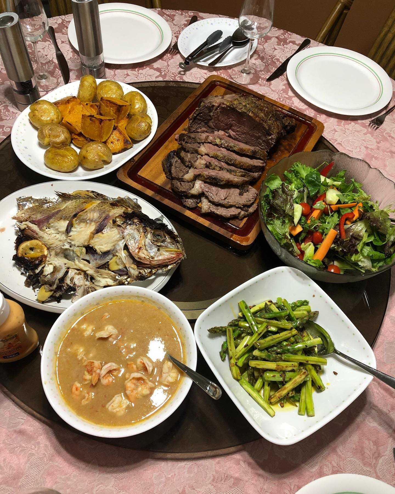
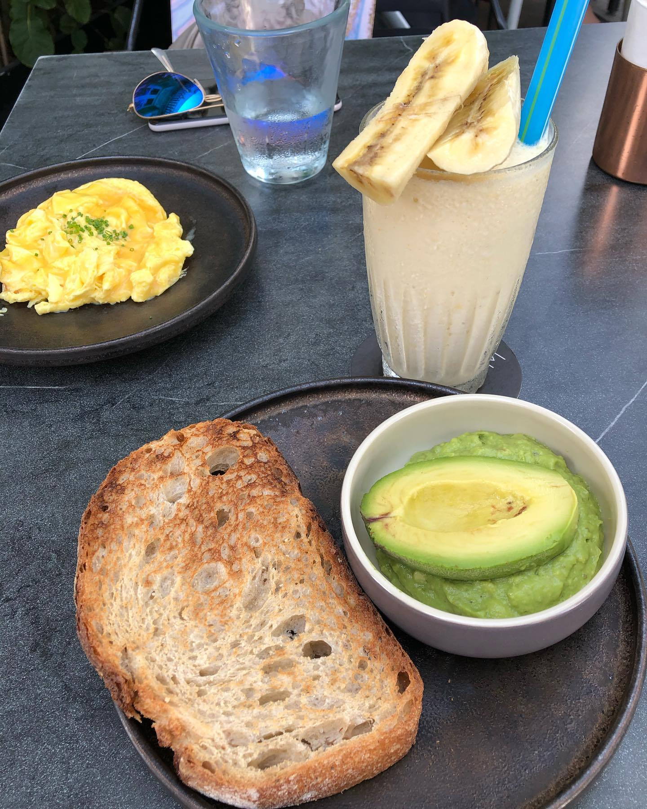

Happy Lunar New Year, folks! Gong Xi Fa Cai! Wishing everyone a healthy, blessed, prosperous and auspicious year of Ox! Last few days were filled with friends reunions -big and small (wish there were family reunions as well but not this time...), delicious food, laughter, karaoke 🎤😄 interesting talks, absolutely happy time! Now when year of rat is definitely over it feels like we finished quarter 5 of 2020 😂 finally it’s behind us! Are you celebrating lunar new year? How do you do this? ___ #lunarnewyear #cny2021 #chinesenewyear #chinesenewyear2021 #yearofox #sgfoodie #foodsg #singapore #friendsandfamily #sgeats #cookathome #yummyinmytummy
2021-02-15 09:19:37
Back to main page